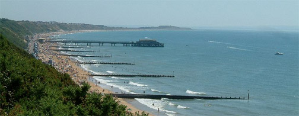

|
.. |
|
|
BOURNEMOUTH
GRAMOPHONE SOCIETY
|
|
 |
|
If
you have an interest in classical music or wish to learn more about
it, then we are confident that you will enjoy joining us for an evening
of entertainment. The society arranges a full programme throughout the
season, of talks given on a wide range of subjects. Presenters include
both professionals such as musicians, conductors, record companies and
historians plus enthusiasts from both our own and other recorded music
societies.
In addition, we hold 'At Home' events, where any member can choose to host an afternoon or evening musical programme. Please
do come along to one of our meetings, you can be sure of a warm welcome
and an interesting talk in a friendly informal atmosphere with convivial
company. |
|
Meetings:
September to May, twice monthly on a Monday.
Location: St. Saviour's Church Hall, Colemore Road, Iford, BH7 6RZ (The hall is next to the church, corner of Holdenhurst Avenue and Colemore Road) Time: 7.30pm to 9.45pm, with break for tea. (There is a car park and ample on road parking) Fees:
Full annual membership £16.00. For
more information contact: |
Visitors
are very welcome
Programme
74th Season - 2020
For a printable copy of the programme click here
The
Committee reserve the right to alter programmes without prior notice.
|
.. |
|